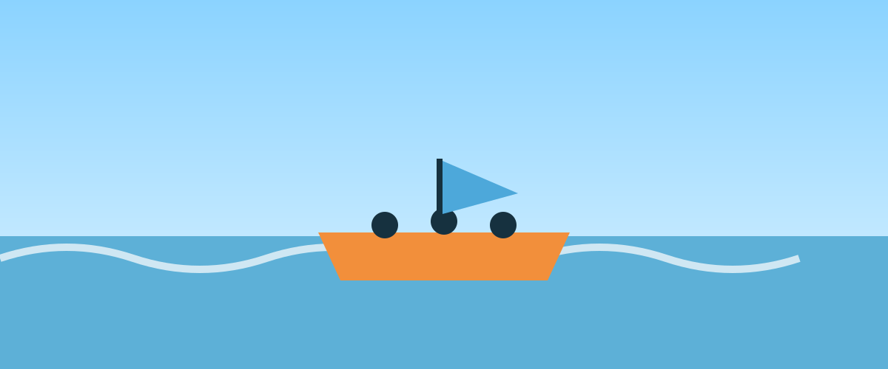

Nossa missão é proporcionar aventuras emocionantes com segurança, respeito à natureza e atendimento acolhedor para famílias, grupos e empresas.

Corredeiras Vivas Rafting
History
A Corredeiras Vivas nasceu em 2012 com o objetivo de conectar pessoas a rios e paisagens incríveis. Começamos com passeios locais e, ao longo dos anos, ampliamos nossos roteiros, treinamento de guias e estrutura para atender aventureiros de todos os níveis.